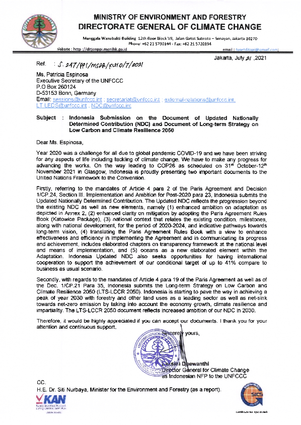

-2021-
UPDATED NATIONALLY DETERMINED CONTRIBUTION REPUBLIC OF INDONESIA
SUMMARY
Indonesia submitted Intended Nationally Determined Contribution (INDC) to the United Nations Framework Convention on Climate Change (UNFCCC) Secretariat prior to COP-21. Under Decision 1/CP. 21, Party who has submitted its INDC before joining the Paris Agreement shall be considered to have communicated its 1st NDC unless the Party decides otherwise. Indonesia decided to strengthen its INDC by enhancing clarity, transparency, and understanding both for national and international interests, and submitted to the UNFCCC Secretariat the NDC document prior to COP-22.
The NDC reflects the progression beyond the earlier pledge in INDC in terms of: (a) the national Business as Usual (BAU) scenario used – BAU of NDC is slightly lower than BAU of INDC (from 2.881 GtCO2e in INDC to 2.869 GtCO2e in NDC), and (b) clarity of sectoral BAU and emission reduction target allocation, and assumption used for BAU projection and target allocation. The NDC has set an ambitious mitigation target for forest and land use and energy sectors which account for about 97% of the total national commitment.
The updated NDC reflects the progression beyond the existing NDC particularly in the following standpoints:
Enhanced ambition on adaptation as elaborated in the programmes, strategies and actions to achieve economic, social and livelihood, and ecosystem and landscape resilience, as depicted in Annex 2.
Enhanced clarity on mitigation by adopting the Paris Agreement rule book (Katowice Package) on information to be provided in NDC, as well as updated policies which potentially contribute to additional achievement of NDC target.
National context that relates the existing condition, milestones along with national development for the period of 2020-2024, and indicative pathways towards long- term vision (Visi Indonesia 2045 and the Long-Term Strategy on Low Carbon and Climate Resilient Development 2050).
Translating the Paris Agreement Rule Book (Katowice Package) into Indonesia’s context with a view to enhance effectiveness and efficiency in implementing the agreement and in communicating its progress and achievement as part of the responsibility of the party to the agreement. This includes elaborated chapters on transparency framework at the national level (National Registry System as the backbone of transparency framework), and means of implementation (finance, technology development and transfer, and capacity building).
1.1. GENERAL POLICIES
Indonesia is a nascent yet stable democracy and the fourth most populous country in the world. Despite continuous, multi-decade economic growth, approximately 11 % of Indonesia’s population is living below the poverty line in 2014. To lift people out of poverty, the Government of Indonesia (GOI) is promoting economic development projected to average at least 5% per year in order to reduce the poverty rate to below 4% by 2025. Indonesia also anticipate both opportunities and challenges with projected population growth of 0.74 percent from 2015 to 2045, as mandated by the Indonesian Constitution, inter alia, that “every person shall have the right to enjoy a good and healthy environment”. As climate change becomes a reality, Indonesia continues to seek a balance between its current and future development and poverty reduction priorities.
In 2015 the Government of Indonesia pledged to reduce emissions from 2020-2030 by 29% (unconditional) up to 41% (conditional) against the 2030 business as usual scenario, an increased unconditional commitment compared to 2010 pledge of 26%. In the first term of President Joko Widodo administration, priority actions within the national Nawa Cita (Nine Priority Agendas) framework were determined and implemented, which includes protecting Indonesia’s citizens, encouraging rural and regional development, improving the quality of life, and improving productivity and global competitiveness. These core missions are consistent with the national commitment towards a low carbon and climate-resilient development path, in which climate change adaptation and mitigation constitute an integrated and cross-cutting priority of the National Medium-Term Development Plan (RPJMN).
In the second term of President Joko Widodo administration, the goal of achieving a prosperous Indonesia has been defined. The RPJMN 2020-2024 is directed to transform Indonesia to a high middle class income country with a fair and sustainable development through following seven agenda : (a) Enhancing economic resilience for quality growth, (b) Strengthening regional development to address inequality among regions, (c) Enhancing human resource quality and competitiveness, (d) Building nation values and character of citizens, (e) Advancing infrastructure to support economic development and provision of basic services, (f) Enhancing the environment and resilience to natural disaster and climate change impacts, and (g) Strengthening stability in politic, law, national security and defence and public service transformation.
Indonesia is recognized its role to play in combatting global climate change in view of its extensive tropical rainforests with high biodiversity, high carbon stock values, as well as energy and mineral resources. Its geographic position in the global ocean conveyor belt (thermohaline circulation), the largest archipelagic country with total areas of 7.81 million square kilometres where marine area occupies about 74.3% of the country areas, Indonesia is vulnerable to natural disaster that will likely be exacerbated by climate change, especially in low-lying areas throughout the archipelago. Furthermore, Indonesia’s position in the ring of fires with recurrent natural
calamity, and in some cases at a high intensity of incidence which requires vast amount of contingency resources to manage - including for rehabilitation and reconstruction, has affected national capacity in providing resources for climate change adaptation. Therefore, Indonesia views a comprehensive land and ocean-based climate change mitigation and adaptation efforts as a critical strategic consideration in achieving climate resilience in food, water and energy.
Indonesia has taken significant steps in land use sector to reduce emissions by instituting a moratorium on the clearing of primary forests and by reducing deforestation and forest degradation, restoring ecosystem functions, as well as sustainable management of forest. The efforts include social forestry through active participation of the sub national governments, private sector, small and medium enterprises, civil society organizations, local communities and adat communities (Indonesia: Masyarakat Hukum Adat), and women – in both the planning and implementation stages. A landscape-scale and ecosystem management approach, emphasizing the role of sub-national jurisdictions, is seen as critical to ensure greater and more enduring benefits from these initiatives.
The strategic approach of Indonesia’s NDC is predicated on the following foundational principles:
Employing a landscape approach: Recognizing that climate change adaptation and mitigation efforts are inherently multi-sectoral in nature, Indonesia takes an integrated, landscape-scale approach covering terrestrial, coastal and marine ecosystems.
Highlighting existing best practices: recognizing significant strides in multi- stakeholder efforts in combating climate change, Indonesia intends to scale up the diversity of traditional wisdom as well as innovative climate change mitigation and adaptation efforts by the government, private sector, and communities.
Mainstreaming climate agenda into development planning: recognizing the needs to integrate climate change into development and spatial planning and budgeting process, Indonesia includes key climate change indicators in formulating its development programme’s targets.
Promoting climate resilience in food, water and energy: recognizing the importance of fulfilling the needs of a growing young population for food, water and energy, Indonesia will improve its management of natural resources to enhance climate resilience by protecting and restoring key terrestrial, coastal and marine ecosystems.
In line with the Paris Agreement, Indonesia respects, promotes and considers its obligation on human rights, the right to health, the right of adat communities (Indonesia: Masyarakat Hukum Adat), local communities, migrants, children, youth, elders, persons with different abilities, and people in vulnerable situations; as well as the right to development, including gender equality, empowerment of women and intergenerational equalities. Engagement of non-party stakeholders, such as local government, private sectors, and civil societies will continuously be enhanced.
Indonesia’s Nationally Determined Contribution (NDC) outlines the country’s transition to a low carbon and climate resilience future. The NDC describes the enhanced actions and the necessary enabling environment during the 2015-2019 period that has laid the foundation for more ambitious goals beyond 2020, contributing to the concerted effort to prevent 2oC increase in global average temperature and to pursue efforts to limit the temperature increase to 1.5oC above pre-industrial levels.
By 2030, Indonesia envisions achieving archipelagic climate resilience as a result of comprehensive mitigation and adaptation and disaster risk reduction strategies. Indonesia has set ambitious goals for sustainability related to production and consumption of food, water, and energy. These goals will be achieved by supporting empowerment and capacity building, improved provision of basic services in health and education, technological innovation, and sustainable natural resource management, in compliance with principles of good governance. Beyond 2030 NDC target, Indonesia has committed to progress towards the transformation to long-term low carbon and climate resilience development strategy.
In order to achieve the 2030 NDC target and expedite the transformational changes towards low carbon and climate resilience development, Indonesia has developed a strategy for NDC implementation, consisting of nine following programmes:
Building ownership and commitment among Ministries and other governmental Institutions, sub-national governments, private sectors, civil societies, and financial institutions (Party and Non-Party Stakeholders).
Capacity building to enhance capacity of institutions and human resources at all levels, covering all aspects of climate change, particularly on mitigation and adaptation actions, implementation of transparency framework, and climate finance.
Creating enabling environment to engage wider stakeholders in mitigation and adaptation as well as in resource mobilization, through appropriate regulatory framework, policy and measures.
Developing framework and network for coordination and building synergy among sectors, regions and actors/stakeholders.
One GHGs-data policy to support the implementation of transparency framework at the national level.
Developing policies, planning and intervention programme for NDC implementation, including integrating mitigation in five category sectors (forestry, energy, IPPU, waste, agriculture) and adaptation (sectoral and regions) into development planning, to secure financial support (public fund) and facilitate resource mobilization (domestic sources and international supports).
Developing guidance for NDC implementation to facilitate Ministries and other governmental institutions, sub-national governments and other non-party stakeholders in implementing Programme No. 6.
NDC implementation refers to implementation of policies, planning and intervention programmes (Programme No.6), taking into account guidance developed under Programme No. 7.
Monitoring and review of NDC to track progress of NDC implementation, review of NDC and adjust the NDC whenever necessary. Inter-ministerial team has been established to monitor progress and achievement of NDC implementation.
1.2. LONG-TERM STRATEGY ON LOW CARBON AND CLIMATE RESILIENCE
As mandated by Article 4.19 of the Paris Agreement, Indonesia formulates a long-term low greenhouse gas emission development strategy (LTS) which defines pathways in achieving low emission development until 2050 and is expected to guide the implementation and development of the subsequent nationally determined contributions (NDCs). The Indonesia’s LTS proposes innovative pathways towards the common goal to imperatively take ambitious actions to address climate change challenges, not only through a deeper GHG emission reduction towards net-zero emissions but also through the element of climate resilience pathway, along with the commitment of NDC.
Successful mitigation actions will reduce adaptation cost and allow Indonesia to better deal with loss and damage associated with climate change impacts. Hence, the LTS will play a central role in aligning the climate goals and targets with national, sub- national and international objectives including sustainable development goals (SDGs), engaging non-party stakeholders, enhancing opportunities for innovation, and enabling communities to earn the benefits of early actions.
The LTS will strengthen the vision of One Hundred Years Indonesia (Visi Indonesia 2045) towards prosperous Indonesia based on its four following pillars: (a) human resource development and science and technology advancement, (b) sustainable economic development, (c) equitable development, and (d) strengthening national resilience and public sector governance. “Visi Indonesia 2045” has ambitious target on poverty reduction, human resource development, economic and social transformation. Therefore, Indonesia’s LTS is designed by taking into consideration the need to balance between emission reduction and economic development, and putting emission reduction, economic growth, a fair opportunity and climate resilient development as an integral part of the LTS’ goal. Conducive environment for investment, structural reform to support growth, and well-designed climate policy as prerequisites for a successful LTS will be addressed during the development process and implementation of LTS.
Indonesia considers the importance of just transition of the workforce and the creation of decent work and quality jobs for an effective and inclusive transition to low greenhouse gas emission and climate resilient development. Creation of employment opportunities for this transition will be carried out in synergy with ongoing transition towards prosperous Indonesia. The following efforts will be the critical parts of the transition:
addressing challenges faced by sectors, cities and regions in transitioning to low carbon development and in ensuring a decent future for workers affected by the transition.
promoting low greenhouse gas emission and sustainable economic activities that will create quality jobs in cities and regions.
enhancing capacity of workforces to facilitate access to decent work and quality jobs, taking into account gender and inter-generational equalities, as well as the needs of vulnerable groups.
enhancing participatory public dialogue to foster high employment rates, adequate social protection, labour standards and wellbeing of workers and their communities.
On gender issues, Indonesia has an advanced policy relating to gender equality and gender balance. Mapping gender issues in climate change in all development sectors will be crucial in implementing the policy. Enhancing role of women in development and strengthening women's capacity and leadership in climate change have been initiated and will be continued as part of the NDC implementation and development of LTS.
According to Indonesia’s Second National Communication of 2010, national greenhouse gas (GHG) emissions were estimated to be 1.8 GtCO2e in 2005. This represents an increase of 0.4 GtCO2e compared to 2000. Most emissions (63%) are the result of land use change and peat and forest fires, with combustion of fossil fuels contributing approximately 19% of total emissions. Based on Indonesia’s First Biennial Update Report (BUR) submitted to UNFCCC in January 2016, national greenhouse gas (GHG) emissions was 1.453 GtCO2e in 2012 which represent an increase of 0.452 GtCO2e from 2000 emissions. The main contributing sectors were LUCF including peat fires (47.8%) and energy (34.9%). The 2nd BUR reported a slight increase in emission level to 1.457 Gg CO2e in 2016, which was dominated by emissions from LUCF including peat fires (43.59%) and energy (36.91%), respectively.
Post 2020, Indonesia envisions a progression beyond its existing commitment to emission reductions. Based on the country’s emissions level assessment in Third National Communication (TNC), Indonesia has set unconditional reduction target of 29% and conditional reduction target up to 41% of the business as usual scenario by 2030. These targets in emission reduction are considered as an ambitious step, taking into consideration its development challenges in eradicating poverty, as well as creating a better quality of life for its citizens as stipulated by 1945 Indonesia Constitution. Indonesia will continue to intensify the efforts to reduce emissions, of which 97.2% comes from forest-and-land and energy sectors.
In forestry sector, Indonesia has set up an ambitious target by 2030 in peat lands restoration of 2 million ha and rehabilitation of degraded land of 12 million ha. REDD+ remains as an important component of the NDC target from land use sector. The First Forest Reference Emission Level (FREL) for REDD+ was submitted to the UNFCCC Secretariat in December 2015, covering deforestation and forest degradation and peat decomposition. The FREL was set at 0.568 GtCO2e yr.-1 (AGB), using reference period of 1990-2012 and is used as the benchmark against actual emission starting from 2013 to 2020. These figures should be used as benchmark for evaluating REDD+ performance during the implementation period (up to 2020). In line with the UNFCCC guidance, Indonesia is in the process of reviewing the First FREL and plan to submit the 2nd FREL by the end of 2020.
In energy sector, Indonesia has embarked on a mixed energy use policy. Indonesia has also established the development of clean energy sources as a national policy directive. Collectively, these policies will eventually put Indonesia on the path to de- carbonization. Government Regulation No. 79/2014 on National Energy Policy, set out the ambition to transform, by 2025 and 2050, the primary energy supply mix with shares as follows:
new and renewable energy at least 23% in 2025 and at least 31% in 2050;
oil should be less than 25% in 2025 and less than 20% in 2050;
coal should be minimum 30% in 2025 and minimum 25% in 2050; and
gas should be minimum 22% in 2025 and minimum 24% in 2050.
As the 14th largest economy, Indonesia is one of the pioneer countries for fossil fuel subsidy reform policy. It has succeeded in removing fossil fuel subsidies to create fiscal space for education, health, social assistance and infrastructure, including renewable energy projects and public transports.
Indonesia has stipulated a national mandatory biodiesel policy of B20 and enhance it to B30 in 2020 — ten-years earlier than 1st NDC target. Another direct command from President Joko Widodo to reduce the imported oil as well as to enhance domestic oil production by constructing additional oil refineries, will be a new shift for Indonesia as part of national goals on “Visi Indonesia 2045”. Moving forward, Indonesia is developing green refineries to produce various drop-in green fuels from bio-resources and partly mixed with existing fuels in order to increase biofuel content and reduce fossil fuel consumption.
For the waste management sector, the Government of Indonesia is committed to develop a comprehensive strategy to improve policy and institutional capacity at the local level, enhance management capacity of urban waste water, reduce landfill waste by promoting the “Reduce, Reuse, Recycle” approach, and the utilization of waste and garbage into energy production. The Government of Indonesia is committed to further reduce emissions from the waste management sector by 2020 and beyond, through comprehensive and coherent policy development, institutional strengthening, improved financial and funding mechanisms, technology innovation, and socio-cultural approaches.
Indonesia’s current policy on municipal waste management has been constituted by Presidential Decree Number 97/2017 on National Policy and Strategy on Solid Waste Management, which promulgated its policies, strategies, programs, and waste reduction target by 2025, as well as under the Presidential Regulation Number 35/2018 on Acceleration of Construction of Thermal Generation Facilities for Converting Waste into Electricity Energy with Environmental Sound Technology.
The projected BAU and both unconditional and conditional emission reduction targets are depicted in Table 1 with more elaboration for each sector in Annex 1.
Climate change presents significant risks for Indonesia’s natural resources that will, in turn, impact the production and distribution of food, water, and energy. Therefore, the GOI considers climate adaptation and mitigation efforts as an integrated concept that is essential for building resilience in safeguarding food, water and energy resources. The GOI has made significant efforts towards developing and implementing a National Action Plan on Climate Change Adaptation which provides a framework for adaptation initiatives that has been mainstreamed into the National Development Plan.
The GOI will continue to implement enhanced actions to study and map regional vulnerabilities as the basis data for adaptation information system, and to strengthen institutional capacity and promulgation of climate change sensitive policies and regulations. Development of nationwide climate vulnerability index data information system, built on the existing system known as SIDIK (Vulnerability Index Data Information System), which allows public access to the information in the online system, will be strengthened. Likewise, the implementation of Ministerial Regulation No. P.33/2016 on Guideline for Development of Adaptation Actions, which allows sub- national government to formulate and implement their own sub-national adaptation actions, will be further enforced.
The goal of Indonesia’s climate change adaptation is to reduce risks, enhance adaptive capacity, strengthen resilience and reduce vulnerability to climate change in all development sectors. This goal will be achieved through inter alia, enhanced climate literacy, local capacity strengthening, improved knowledge management, convergent policy on climate change adaptation and disaster risks reduction, and application of adaptive technology.
In achieving the adaptation goal, Indonesia focus on three areas of resilience, namely: economic resilience, social and livelihood resilience, and ecosystem and landscape resilience. Key programmes, strategies and actions for each area of resilience have been identified and reflected in Annex 2. The National Medium-Term Development Planning (RPJMN 2020-2024) includes adaptation under the 6th development agenda (Enhancing the environment and resilience to natural disaster and climate change impacts), focusing on water, agriculture, health, and coastal and marine ecosystem.
In general, the key programmes, strategies and actions on adaptation in Annex 2 aim at:
reducing drivers of vulnerability to climate change impacts,
responding to climate change impacts and managing risks,
enhancing capacity of communities and sustainability of ecosystem services,
enhancing engagement of stakeholders at all levels in building climate resilience.
The key programmes and strategy to achieve adaptation goals in NDC are elaborated into actions which contain a high national dimension, have strong linkages with international conventions/agreements which open opportunity for Indonesia to build synergy between the implementation of the Paris Agreement of the United Nations Framework Convention on Climate Change (UNFCCC) and other related conventions/ agreements.
Indonesia’s commitment under Convention on Biological Diversity (CBD), Convention to Combat Land Degradation and Desertification (UNCCD), RAMSAR convention, and Sendai Framework on Disaster Risk Reduction (SFDRR), as well as Sustainable Development Goals (SDGs) were considered to have significant potential for synergy with NDC - adaptation. For example:
increasing conservation areas under CBD commitment has a strong linkage with adaptation efforts particularly in achieving ecosystem and landscape resilience which will affect positively to economic resilience and social and livelihood resilience.
implementation of UNCCD 2018-2030 Strategic Framework that by 2030 combat desertification, restore degraded land and soil including land affected by desertification, drought and floods, and strive to achieve a land degradation- neutral world and other interrelated SDGs, are closely linked with adaptation efforts in achieving social and livelihood, and positively affect economic resilience and ecosystem and landscape resilience.
RAMSAR convention has a strong connection with adaptation in terms of conserving and managing wetland as well as addressing the drivers of wetland loss and degradation.
implementation of SFDRR has a strong synergy with adaptation efforts in reduction of risks and loss caused by natural disasters, through enhanced climate literacy, risks management, and disaster preparedness.
As the 13th goal of SDGs, implementation of climate change convention (from UNFCCC to the Paris Agreement) address all aspects of the SDGs.
4.1. QUANTIFIABLE INFORMATION ON THE REFERENCE POINT AND TIME FRAMES AND/OR PERIODS FOR IMPLEMENTATION
|
Unconditional Reduction |
Indonesia has voluntarily committed to reduce unconditionally 26% of its greenhouse gases against the business as usual scenario by the year 2020. The above commitment is a necessary prerequisite for embarking on a more ambitious commitment to further reductions by 2030 by outlining an emission reduction plan using an evidence-based and inclusive approach. The commitment will be implemented through effective land use and spatial planning, sustainable forest management which include social forestry programme, restoring functions of degraded ecosystems including wetland ecosystems, improved agriculture productivity, energy conservation and the promotion of clean and renewable energy sources, and improved waste management. Indonesia has committed to reduce unconditionally 29% of its greenhouse gasses emissions against the business as usual scenario by the year of 2030. The BAU scenario was projected approximately 2.87 GtCO2e in 2030 which is updated from the BAU scenario on the INDC due to existing condition on energy policy development in particular in coal fired power plant. |
|
Conditional Reduction |
Indonesia could increase its contribution up to 41% reduction of emissions by 2030, subject to availability of international support for finance, technology transfer and development and capacity building. |
4.2. SCOPE AND COVERAGE
|
Type |
Emission reduction relative to Business As Usual (BAU) baseline. |
|
Baseline |
BAU scenarios of emission projection started in 2010. |
|
Scope |
Carbon Dioxide (CO2), Methane (CH4), Nitrous Oxide (N2O) |
|
Coverage |
Nationwide with a landscape and ecosystem management approaches in both adaptation and mitigation efforts by building and strengthening sub-national jurisdictional capacity. |
4.3. PLANNING PROCESSES
The Government of Indonesia has demonstrated its strong commitment to institutional development by establishing the Directorate General of Climate Change, under the Ministry of Environment and Forestry. Established by Presidential Regulation No. 16 of 2015, the Directorate General serves as the National Focal Point for the United Nations Framework Convention on Climate Change to effectively facilitate ongoing relevant programmes and processes being implemented by variety of government sectors and stakeholders. Since climate change has local to national and international dimensions, coordination and synergy will continuously be enhanced between the Ministry of Environment and Forestry, National Development Planning Agency (BAPPENAS) and Ministry of Finance in the context of climate change, national development and finance, and with Ministry of Foreign Affairs in the context of climate change and international negotiation.
In the preparation of the Updated NDC, the GOI has conducted consultations with various stakeholders representing Ministries and other government institutions, academia, scientists, private sector, and civil society organizations; these consultations have included workshops and consultations organized at both the national and provincial levels, as well as bilateral meetings with key sectors.
The preparation of the NDC has taken into account the Sustainable Development Goals (SDGs) particularly on taking urgent action to combat climate change and its impacts, promoting food security and sustainable agriculture, achieving gender equality, ensuring the availability and sustainable management of water, access to affordable, reliable, and renewable energy for all, sustained, inclusive and sustainable economic growth, resilient infrastructure, sustainable consumption and production patterns, conservation and sustainable use of the oceans, seas and marine resources, and protecting, restoring and promoting sustainable use of terrestrial ecosystems, sustainably managing forests, combating desertification, and halting and reversing land degradation and biodiversity loss.
Following article 3.4 UNFCCC Handbook, Indonesia has integrated its policies related to mitigation and adaptation into the national development planning, including National Medium-Term Development Planning (RPJMN 2020-2024) and Indonesia Vision 2045 (Visi Indonesia 2045).
4.4. ASSUMPTIONS AND METHODOLOGICAL APPROACHES
|
Metric Applied |
Global Warming Potential (GWP) on a 100-year timescale in accordance with the IPCC’s 4th Assessment Report. |
|
Methodology for Estimating Emissions |
Model for estimating emission:
|
|
Coverage of Emission Reduction |
With the baseline and assumption used for projection and policy scenario 2020-2030, the projected BAU and emission reduction for both unconditional (CM1) and conditional (CM2) reduction, as mentioned earlier, are as in the Table 1 with more elaborated assumptions for each sector can be seen in the Annex 1. |
Table 1. Projected BAU and emission reduction from each sector category
|
Sector |
GHG Emission Level 2010* (MTon CO2e) |
GHG Emission Level 2030 |
GHG Emission Reduction |
Annual Average Growth BAU (2010-2030) |
Average Growth 2000-2012 |
|||||
|
MTon CO2e |
MTon CO2e |
% of Total BaU |
||||||||
|
BaU |
CM1 |
CM2 |
CM1 |
CM2 |
CM1 |
CM2 |
||||
|
1. Energy* |
453.2 |
1,669 |
1,355 |
1,223 |
314 |
446 |
11% |
15.5% |
6.7% |
4.50% |
|
2. Waste |
88 |
296 |
285 |
256 |
11 |
40 |
0.38% |
1.4% |
6.3% |
4.00% |
|
3. IPPU |
36 |
70 |
67 |
66 |
3 |
3.25 |
0.10% |
0.11% |
3.4% |
0.10% |
|
4. Agriculture** |
111 |
120 |
110 |
116 |
9 |
4 |
0.32% |
0.13% |
0.4% |
1.30% |
|
5. Forestry and Other Land Uses (FOLU)*** |
647 |
714 |
217 |
22 |
497 |
692 |
17.2% |
24.1% |
0.5% |
2.70% |
|
TOTAL |
1,334 |
2,869 |
2,034 |
1,683 |
834 |
1,185 |
29% |
41% |
3.9% |
3.20% |
Notes: CM1= Counter Measure 1 (unconditional mitigation scenario)
CM2= Counter Measure 2 (conditional mitigation scenario)
* ) Including fugitive.
**) Only include rice cultivation and livestock.
***) Including emission from estate crops plantation.
4.5. FAIR AND AMBITIOUS IN THE LIGHT OF NATIONAL CIRCUMSTANCES
Indonesia GDP growth rate has slowed down between 2010-2015, from 6.2-6.5% per annum to only 4.0% (first quarter 2015). Indonesia’s population has increased at an average rate of 1.49% during the period of 2000-2010, posing challenges for Indonesia in fulfilling energy demand, ensuring food security, and fulfilling livelihood needs. At the same time, poverty alleviation remains a challenge for Indonesia, with 10.96% of the population living in poverty in 2014, and the unemployment rate at 5.9%.
The above data was used as a basis in setting up the Indonesia’s target for reducing greenhouse gas emission under the unconditional- and conditional-scenarios (CM1- and CM2-scenarios).
There has been an increase on average growth rate of GDP during period of 2015- 2019 of 5.03% compared to 4.0 % at the first quarter 2015, with the highest growth rate of 5.17% in 2018 and the lowest one of 4.88% in 2015. The 2019 GDP growth rate was also high (5.02%) although slightly lower than the growth rate in 2018. However, the COVID-19 pandemic which has brought about global crisis not only on health, but also on social and economic aspects, has negatively affected Indonesia’s economy. During the COVID-19 pandemic, Indonesia has experienced economic contraction with GDP growth rate of minus 5.3% at the second quarter 2020.
Despite current progress in development and challenges, particularly caused by the COVID-19 pandemic, Indonesia is committed to transform its current development pathway towards low carbon and climate resilience in a phased-approach. The pathway towards de-carbonization of the economy will be integrated into Indonesia’s long-term low greenhouse gas emission and climate resilient development strategy.
4.6. INDONESIA'S NDC CONTRIBUTES TOWARDS ACHIEVING THE OBJECTIVE OF THE CONVENTION AS SET OUT INTS ARTICLE 2
The Indonesia’s NDC will contributes towards achieving the objective of the Convention as set out in its Article 2 through its climate change related policies by reducing greenhouse gas emission and enhancing climate resilience which will lead to sustainable economic development.
Climate change policies will align with sustainable economic development through reduced GHGs emission and enhanced climate resilience. Sustainable economic development needs conducive environment for investment, fair international trade, and industrial-based economic growth. Climate change policies requires low carbon and climate resilient development, supported by domestic and international resources.
Indonesia also considers to work on finding the peaking time of national GHGs emissions necessary to meet the national sustainable development objectives while contributing to the global efforts to fight against the dangerous impacts of climate change by limiting temperature increase to 2oC and pursuing the limitation to 1.5oC.
As part of the implementation of Article 13 of the Paris Agreement, Indonesia applies an Integrated National Transparency framework, through: (a) National Registry System (Id. Sistem Registry Nasional/SRN) for mitigation, adaptation and means of implementation both from national and international sources; (b) National GHGs Inventory System (SIGN-SMART); (c) MRV system for mitigation including REDD+, (d) Safeguards Information System for REDD+ (SIS-REDD+); and (e) Information Systems on vulnerability (SIDIK) and joint adaptation and mitigation at the Village level (PROKLIM).
The National Registry System (SRN) was established in 2016 as a web-based system for managing data and information on mitigation, adaptation, and means of implementation (finance, capacity building, and technology transfer and development). Public access through website allows stakeholders to obtain data and information on mitigation, adaptation, and means of implementation registered in the system.
In general SRN has the following functions: (a) registration of mitigation and adaptation actions, achievement and resources to support actions (finance, capacity, technology); (b) provision of information for awarding government recognition to mitigation and adaptation contribution of various actors; (c) provision of public access to data and information on actions and resources; (d) data base management to support policy analysis and formulation; and (e) avoiding double counting of achievement.
For about three years since its establishment, the SRN management has been focussed on:
development of web-based infrastructure both hardware and software, including back up system and data centre to maintain the full time setting of the system.
awareness raising, hands on training and stakeholder communication, to increase understanding on various aspects of SRN, thus encourage relevant Ministries and non-state actors to register to SRN their actions and resources to support actions.
issuance of regulations such as regulations on SRN, REDD+, MRV, and establishment of a roaster of experts, methodological panel, and inter-ministerial team for monitoring and evaluation of NDC implementation.
review of existing design of SRN, its effectiveness towards its full functions, and stakeholder commitment in registering their actions and resources to support actions.
mapping and analysing existing systems in the effort to build synergy, including through establishing link between SRN and all relevant existing systems, with a view to integrate all related data and information on climate actions and supports to SRN.
As part of implementation strategy of NDC, Indonesia is pursuing ‘One GHGs Data Policy’. The SRN will play a strategic role in the implementation of this policy as well as other strategies. Therefore, SRN will be further enhanced, taking into account outcomes of the review of SRN design, experience and lessons drawn from three years operationalization of SRN, and international development in transparency framework.
The SRN is targeted to be fully functioning by 2030, with interim target by 2024 that SRN will be able to provide most data and information needed for preparing national communication (Natcom) and biennial transparency report (BTR), in line with Katowice rule book and subsequent COP decisions on transparency framework.
Indonesia recognizes the need for significant investment to strengthen human resources and institutional capacities and technology development, to enable the SRN fully functioning by 2030. Hence, Indonesia will use domestic funding and mobilize international funding sources, including opportunities under capacity building initiatives for transparency framework mandated by Decision 1/CP. 21 and the Paris Agreement.
Article 3 of the Paris Agreement stated that as nationally determined contributions to the global response to climate change, all Parties are to undertake and communicate ambitious efforts as defined in Articles 4, 7, 9, 10, 11 and 13 with the view to achieving the purpose of this Agreement as set out in Article 2. The efforts of all Parties will represent a progression over time, while recognizing the need to support developing country Parties for the effective implementation of this Agreement.
Article 9, 10 and 11 of the Paris Agreement specifically refers to Means of Implementation. The key elements of the Means of Implementation -- finance, technology development and transfer, and capacity building -- are integral part of the agreement. To enhance the effectiveness and efficiency of means of implementation, finance, technology and capacity building should be coherently provided through cooperative and coordinated linkages among relevant entities.
6.1. FINANCE
Consistent with Article 9 of the Paris Agreement, developed country parties are requested to provide financial resources to assist mitigation and adaptation in developing countries, and taking the lead in mobilizing climate finance from a variety of sources, instruments and channels.
Indonesia’s unconditional and conditional commitment in achieving quantified target of GHGs emission reduction reflects the need for domestic and international sources of finance.
National Development Planning Agency (BAPPENAS) reported that for the period of 2007 to 2014 Indonesia had spent a total of about USD 17.48 billion for climate change adaptation, mitigation and supporting activities. For the period of 2015 to 2019, Indonesia continue to provide funding for the implementation of climate change actions and plans, including allocating a total of USD 55.01 billion. Indonesia will continue to set aside significant national funding for the implementation of mitigation and adaptation actions for the period of 2020-2030.
Indonesia also receives international support through multilateral channels (such as GEF, FCPF, FIP, UNREDD+, Bio-CF, GCF, and financial institutions) and bilateral channels (Norway, Germany, Japan, USA, and others). During the reporting period of 2015-2016, Indonesia recorded to have received support of USD 1,237.41million in the form of loan and grant through bilateral and multilateral channels.
Considerable challenge has been encountered in estimating investment needs for climate mitigation and adaptation. Budget tagging for climate change as the first attempt to address the challenge has been carried out since 2015. The first budged tagging focussing on mitigation was done to 2015 state budget, by clustering activities into two categories: first category includes activities which could deliver emission reduction and the second category covered supporting activities.
The Ministry of Finance recorded that there has been an increase in amount of budget allocation for activities categorized as mitigation from IDR 146.8 trillion (~ USD 10.49 billion) in 2017 to IDR196.3 trillion (~ USD 14.02 billion) in 2018. On adaptation, the Ministry of Finance recorded USD 227.4 million budget allocation, based on budget tagging for adaptation in 2018. Results of the budget tagging has helped government in identifying activities in annual budget which can deliver mitigation and adaptation results. However, a lot of improvements need to be done to enable the budget tagging results to be used as the basis for estimating finance needs for NDC implementation.
Projection of needs as a basis for developing financing strategy for the whole period of NDC implementation remains challenging. For example, Indonesia communicated through its 2nd Biennial Update Report (2nd BUR - 2018) an initial estimated finance needs from 2018-2030 of about USD 247 billion. In 2019, Indonesia carried out another estimation of finance needs of about IDR 4,520 trillion (~ USD 322.86 billion) for the implementation of mitigation actions in the NDC roadmap. The later estimated finance needs covered only mitigation actions (actions which directly generate emission reduction, it has not included the costs for creating enabling environments).
Constrains has also been faced in estimating support needs, in particular in relation to methodological approach used to assess finance needs for mitigation and adaptation, data availability and reliability, and diverse perceptions of stakeholders on NDC financing.
Despite challenges faced in projecting finance needs for NDC implementation, Indonesia has developed a number of innovative green financing, which could contribute positively to NDC implementation, for example, green sukuk, green bond, and public-private partnership through SDGs-One Indonesia Platform. In 2018, Ministry of Finance recorded the issuance of ‘green sukuk’ in total of USD 2.0 billion for five years period. Both ‘green sukuk’ and ‘green bond’ has significant potential for financing climate actions.
In order to strengthen climate financing, Indonesia has established a national agency for environmental fund management (Id. Badan Pengelola Dana Lingkungan Hidup/BPDLH). BPDLH is mandated to manage and mobilize finance for environment and allowed to mobilize climate finance from various sources both national and international sources, private and public sources, bilateral and multilateral channels. Since its establishment in October 2019, BPDLH has managed reforestation fund from domestic sources (forest levy paid by private sectors) and initiated REDD+ result- based payment from international sources.
A specific climate financing instrument ‘Carbon Pricing’ is also under preparation, which will open opportunity to mobilize climate finance from both international and domestic sources and to incentivise stakeholders’ contribution to NDC achievement.
Indonesia will continue to work on Article 5 of the Paris Agreement that sends clear political signal on the recognition of the roles of forest and REDD+. Existing COP decisions has provided sufficient guidance to implement and support REDD+ implementation. As policy approaches and positive incentives, REDD+ should be able to support the achievement of Indonesia’s emission reduction target in forestry sector.
Furthermore, Indonesia welcome bilateral, regional and international cooperation in the NDC implementation as recognized under Article 6 of the Paris Agreement, that facilitate and expedite technology development and transfer, payment for performance, technical cooperation, and access to financial resources to support Indonesia’s climate mitigation and adaptation efforts towards a climate resilient future.
6.2. TECHNOLOGY DEVELOPMENT AND TRANSFER
Indonesia acknowledges the central role of science, innovation, and technology in tackling climate change. Together with human resource development, science and technology advancement has been set as one of the four pillars of “Visi Indonesia 2045”. Climate technology development will be aligned with this vision and guided by Law on National System for Science and Technology (UU No. 11/2019).
Article 10 of the Paris Agreement recognizes the importance of technology for the implementation of mitigation and adaptation, and the needs of developing country for support, including for strengthening cooperation on technology development and transfer at different stages of the technology cycle.
Needs Assessment is an integral part of technology development and transfer. Indonesia embarked on First Technology Needs Assessment (TNA) in 2010 focusing on mitigation, then followed by the 2nd TNA in 2012 covering both mitigation and adaptation. The outcomes of ongoing TNA that has been carried out since 2019 will provide guidance for technology development and transfer to support NDC implementation.
The role of endogenous technology, local wisdom and best practices will continue to be strengthened. Indonesia also calls for international support and collaboration in research, development and demonstration (RD & D) of innovative technologies. International support on technology development and transfer will also be directed to address possible risks of the selected technology and constraints in the implementation process of technology transfer and collaboration.
6.3. CAPACITY BUILDING
Capacity building on climate change has been carried out for many years by government institutions, international organizations, NGOs, and private sectors. Nevertheless, collecting data and information on the areas of capacity building and its progress, experiences and lessons remains challenging, and that gaps and overlaps in capacity building activities have been unavoidable. The main challenges in capacity building, include:
diversity in regional circumstances, progress in development, culture and literacy which need considerable process both in tailoring programme and approach in implementation,
Lack of coordination among capacity programmes and activities, including the ones with international supports.
Dispersed data and information on capacity building programmes and implementation, and that difficult to draw experiences and lessons as well as gaps and overlaps.
Capacity building programme on climate change will be aligned with Indonesia vision on education which will focus on: (a) human resources development to build strong character, (b) regulatory reform to increase effectiveness and efficiency of capacity building programmes and activities, (c) Increase investment in human resource development, including revitalization of vocational education, (d) creation of employment and business opportunities, and (e) use of technology to increase efficiency in capacity building.
Capacity building programme and activities on climate change is one among a number of approaches to address just transition and decent work issues in mitigation and adaptation, including gender and inter-generational needs as well as the needs of vulnerable groups. A preliminary assessment on capacity building needs was done in 2018-2019 as part of national capacity building and technology needs assessment (CBTNA), which can be enhanced as part of the capacity building road map.
Two interrelated instruments of capacity building will be used to support NDC implementation. The first instrument (General Instrument) will focus on integrating climate change into the national system on education, training, and other forms of capacity building, while the second instrument (Technical Instrument) will focus on capacity building programmes for various actors in mitigation and adaptation.
The General Instrument covers, inter alia, the following efforts:
Increase public awareness through outreach and campaign.
Improve provision of information accessible for public with different level of knowledge on climate change.
Enhance stakeholder engagement in climate policy formulation and actions.
Enhance collaboration and network at the local, national and international levels.
The Technical Instrument specifically deals with capacity building programmes for both institutions carrying out capacity building on climate change and actors (state and non- state) implementing climate change mitigation and adaptation. Depending on the target groups of capacity building, the programme aims at capacity enhancement at least in planning and implementation of mitigation and adaptation including climate financing strategy, access to finance and technology, GHGs inventory, and MRV of actions and supports or in a broader scope for the implementation of the transparency framework mandated by Article 13 of the Paris Agreement.
Article 11 of the Paris Agreement encourages collaboration in capacity enhancement of developing country in implementing the agreement, with developed country parties provides support for the capacity building. The Paris Agreement and its relevant decisions also emphasize the needs of developing country for capacity building in implementing transparency framework. Indonesia will use domestic resources and mobilize international support to enhance its capacity to support NDC implementation, including for further development of national system on transparency framework and to progress with transformational changes in capacity building.
The NDC reflects the most recent data and information, analysis, and scenario for possible future, by the Government of Indonesia. As a developing country, Indonesia will likely experience dynamic changes due to national and global economic changes. In this regard, the NDC will be reviewed and adjusted, as necessary, considering national circumstances, capacity and capability, and the provision under the Paris Agreement.
Annex 1
Updated Nationally Determined Contribution (NDC)
Republic of Indonesia
MITIGATION
Assumptions used for projected BAU and emission reduction (unconditional/CM1 and conditional/CM2 reduction) for all sector categories (Energy, Waste, IPPU, Agriculture, and FOLU)
|
SECTOR: ENERGY |
|||
|
BAU |
Mitigation Scenario 1 (CM 1) |
Mitigation Scenario 2 (CM 2) |
|
|
1. Efficiency in final energy consumption. |
Inefficiency in final energy consumption. |
75% * |
100% * |
|
2. Implementation of clean coal technology in power plants. |
0% |
||
|
3. Renewable energy in electricity production. |
Coal power plant |
19.6% (Committed 7.4 GW based on RUPTL) |
Electricity production of 132.74 TWh ** |
|
4. Implementation of biofuel in transportation sector |
0% |
90% |
100% |
|
5. Additional gas distribution lines (Gas pipeline for residential and commercial sectors) |
0% |
100% |
100% |
|
6. Compressed Natural Gas consumption (CNG fuelling station). |
0% |
100% |
100% |
* The total target to be achieved through clean energy and energy efficiency programmes
**132.74 TWh is equivalent to 21.65 GW
Notes:
Efficiency in final energy consumption:
Energy efficiency measures to be carried out by all energy consuming sectors (industry, commercial, transport, residential) through improvement of device efficiency and energy system efficiency.
Implementation of clean coal technologies in power plants:
Clean coal technologies such as supercritical and ultra-supercritical coal-fired power plants and other technologies that will be implemented after they are commercially available.
Renewable energy in electricity production:
Renewable power plants to be developed includes geothermal, hydropower, solar PV, wind turbine, biomass, and biofuel.
Implementation of biofuel in transportation sector:
The main feedstock for the biofuel production will be palm oil.
Additional gas distribution lines (Gas pipeline for residential and commercial sectors):
Construction of additional natural gas pipeline is intended to substitute the use of kerosene for cooking in residential and commercial sectors.
Compressed Natural Gas consumption (CNG fuelling station):
CNG consumption is intended to increase gas consumption in transportation sector
|
SECTOR: AGRICULTURE |
|||
|
BAU |
CM1 |
CM2 |
|
|
1. The use of low-emission crops. |
No mitigation actions. |
In total, the use of land for low emission crops is up to 926,000 hectares in 2030*. |
In total, the use of land for low emission crops is up to 908,000 hectares in 2030*. |
|
2. Implementation of water-efficient concept in water management. |
No mitigation actions. |
Implementation of water efficiency is up to 820,000 hectares in 2030*. |
Implementation of water efficiency is up to 820,000 hectares in 2030*. |
|
3. Manure management for biogas. |
No mitigation actions. |
Up to 0.06% of the total cattle in 2030**. |
Up to 0.06% of the total cattle in 2030**. |
|
4. Feed supplement for cattle. |
No mitigation actions. |
Up to 2.5% of the cattle population in 2030**. |
Up to 2.5% of the cattle population in 2030**. |
Note: * the use of best available technology will increase cattle productivity and lead to the decrease of land use change to agricultural purposes.
** increase of cattle population and current biogas operationalization (with the assumption that government’s subsidy will continue taking into consideration its high cost of investment).
The index for paddy increases from 2.11 into 2.5 (for Java island) and from 1.7 up to 2.0 (for outside of Java island). It is assumed that all paddy fields out of Java island has already been facilitated with irrigation system like in Java island, and all irrigation system in Java island is working optimally (existing condition: only 60- 70% of irrigation system in Java are working optimally).
Assumption used for crop index: for seasonal crop, the cropping Intensity or crop index is a ratio between the area of harvesting and the area of crop planted. Hence, the IP is 2 when the areas is planted twice a year. For annual crop, the crop index refers to crop fraction that harvestable (under productive ages).
Assumption used for population/GDP and livestock: all projection scenarios for GDP employ the same livestock population. Target settled for self-supporting meat is difficult to reach, and even the needs for meat would not be easily fulfilled. The livestock population growth follows historical data, which is lower than the rate of the meat demands.
In agriculture, the emission reduction target for CM2 is lower than CM1 as the expansion of rice field outside Java is higher in CM2 than that of CM1 as part of effort to make Indonesia becoming rice exporting countries by 2030. In CM1, the production target is only to maintain self-rice sufficiency. In addition, the rice field conversion in Java is also minimized yielding much higher rice field area in CM2 than that of CM1 and BAU. Thus, the level of CH4 emission from rice cultivation in CM2 is much higher than that of CM1. The current level of mitigation intensity in CM2 is not big enough to compensate the increase in the emission, resulting in lower emission reduction target in CM2 than that in CM1.
SECTOR: FORESTRY AND OTHER LAND USES (FOLU)
A. Deforestation rate
Deforestation rate under BAU scenario for 2013-2020 is in line with the FREL for REDD+, which is about 0.920 million ha/year, and consist of planned and unplanned deforestation. The rate for planned deforestation was calculated under existing development scenario.
For both CM1 and CM2 scenarios, it is assumed that the rate of unplanned deforestation is low and the total of planned and unplanned deforestation would not exceed 0.450 million ha.
Rate of deforestation for BAU 2021-2030 assumed to be 0.820 million ha/year, with scenario of CM1 and CM2 comes into 0.325 million ha, respectively.
|
BAU |
CM1 |
CM2 |
Note |
|
|
Total (000 ha) |
2013-’20: 920 2020-’30: 820 |
2013-’20: 450 2020-’30: 325 |
2013-’20: 450 2020-’30: 325 |
The total rates of deforestation are inputs and unplanned deforestation is calculated as (Total Deforestation-Planned Deforestation) |
|
1. Unplanned Deforestation |
2013-’20: 500 2020-’30: 409 |
2013-’20: 175 2020-’30: 92 |
2013-’20: 175 2021-’30: 66 |
|
|
2. Planned Deforestation (from the model) |
2011-’30: result from model |
2011-’30: result from model |
2011-’30: result from model |
B. Forest Degradation
Avoiding degradation of natural forest through controlling the illegal logging and increasing the production of timber plantation by accelerating the establishment of timber plantation and productivity.
Assumption for wood production:
Some literatures recorded that the rate of wood extraction from sustainable natural forest ranges from 20 to 35 m3ha-1. This work took an assumption of 50 m3ha for wood extraction in 2010 (the difference between literature and assumption taken is from illegal logging. Rate of sustainable extraction is assumed to be 30 m3 ha-1.
Target for wood production from natural forest under CM1 and CM2 scenarios follow Long-Term National Forestry Planning (Rencana Kehutanan Tingkat Nasional/RKTN) (MoF, 2011), while the BAU is higher, using data from the Association for Indonesian Forest Concessionaire (APHI).
The rate for establishing industrial forest plantation under BAU follows the historical data, with the percentage of feasible areas for planting is about 63% (Assumption from APHI, 2007)
It is assumed that all forests cleared would leave zero waste, and all woods from these areas would be useable.
Utilization of wood from oil palm and rubber trees at the end of its cycle is at medium rate or about a half of total.
Assumption for annual growth rate of natural forest:
1. Annual growth rate of plants in ton C/ha/year for natural forest was calculated based on the diameter growth in m3/ha/year with conversion factor of:
Biomass Expansion Factor (BEF): 1.4
Wood density for natural forest: 0.7 t/ m3
2. The estimated annual growth rate of natural forest based on the above assumption is 0.3 tC/ha/year to 0.33, representing the BAU rate. Under the CM1 and CM2, the rate is increased to 0.53 tC/ha/year and 0.71 tC/ha respectively.
3. The estimated growth rate for natural forest is lower than other published articles and also IPCC default ranged from 1 tC/ha/year and 3.5 tC/ha/year for logged forest >20 years and <20 years respectively. By adjusting or increasing the growth rate of natural forest through enrichment planting, capacity of Indonesian forest in sequestering carbon will increase significantly, thereby increasing emission reduction.
C. Land Rehabilitation (afforestation/reforestation/timber plantation)
Increasing carbon sequestration in CM1 and CM2 from the BAU is conducted by increasing land rehabilitation program (afforestation and reforestation) and accelerating the establishment of timber plantation in unproductive lands (about 12 million ha in total)
The annual planting rate of timber plantation in CM1 and CM2 will reach 320 thousand ha per year (in total 6.4 million ha by 2030)
The annual planting rate for land rehabilitation will reach 280 thousand hectare per year (in total 5.6 million ha by 2030)
Assumption for growth rate of timber plantation:
1. The rate of Industrial Plantation Forest (HTI) in ton C/ha/year was calculated based on data of measurable wood production volume in m3/ha, with BAU, CM1 and CM 2 in 2010 about 120 m3/ha and has been increased respectively to 134, 140 and 144 m3/ha in 2030 with the role of technology intervention. The intensification is in every 10 year and correction factors are as follows :
BEF: 1.67 (IPCC Default)
Wood density for HTI: 0.4 t/m3
2. Rotation of six years and survival rate of more than 90%.
D. Peatland Restoration
Reducing emission from degraded peatland are carried out through rewetting and revegetation (peatland restoration).
Under the BAU, it is assumed no restoration activities. Under CM1 and CM2, peat restoration will reach 2 million ha by 2030.
Assumption for peatland restoration
Rate of peat decomposition is assumed to be zero in the restored peatland as the peat condition will be the same as/closed to natural condition.
Successful rate of peatland restoration is assumed to be 90% for both CM1 and CM2.
SECTOR: WASTE
|
SUB-SECTOR: SOLID WASTE |
|||
|
BAU |
CM1 |
CM2 |
|
|
1. Enhancement of LFG recovery from 2010 to 2030. |
No mitigation actions. |
LFG recovery reduces CH4 from 0.65% to 10%. |
LFG recovery reduces CH4 from 0.65% to 10%. |
|
2. Enhancement of the percentage of waste utilization by composting and 3R (paper). |
No mitigation actions. |
22% in 2020, 30% in 2030*. |
22% in 2020, 30% in 2030*. |
|
3. Enhancement of the percent-age of PLTSa/RDF (Refuse Derived Fuel) implementation, compare to total waste. Note: PLTSa = Pembangkit Listrik Tenaga Sampah |
No mitigation actions. |
|
|
Notes: * refer to national target on solid waste management 2015-2025.
** considered government plan in developing PLTSa (Pembangkit Listrik Tenaga Sampah) in 7 cities and current trend on waste utilization by RDF in industries.
*** considered size of the cities, their mitigation potentials in RDF implementation, and population growth rate.
|
SUB-SECTOR: DOMESTIC LIQUID WASTE |
|||
|
BAU |
CM1 |
CM2 |
|
|
Management of domestic liquid waste. |
No mitigation actions. |
Note: A quantitative target to be defined by the Min. of Public Work and the Min. of Health. |
Note: A quantitative target to be defined by the Min. of Public Work and the Min. of Health. |
|
SUB-SECTOR: INDUSTRIAL LIQUID WASTE |
|||
|
BAU |
CM1 |
CM2 |
|
|
Management of industrial liquid waste. |
No mitigation actions. |
Pulp and paper industry implement the waste water treatment sludge management, and utilization of methane. |
Pulp and paper industry implement the waste water treatment sludge management and utilization of methane. |
|
Waste water treatment (palm oil mill effluent or POME) in palm oil industry: implement methane capture & utilization. Note: A quantitative target to be defined by the Min. of Industry and the Min. of Environment and Forestry. |
Waste water treatment (palm oil mill effluent or POME) in palm oil industry: implement methane capture & utilization. Note: A quantitative target to be defined by the Min. of Industry and the Min. of Environment and Forestry. |
||
|
SECTOR: IPPU |
|||
|
BAU |
CM1 |
CM2 |
|
|
Industrial processes and product use in major large scale industries. |
No mitigation actions. |
- Cement industry implements “clinker to cement ratio” (blended cement) from 80% in 2010 to 75% in 2030. |
- Cement industry implements “clinker to cement ratio” (blended cement) from 80% in 2010 to 75% in 2030. |
|
|
||
|
Other actions:
Note: A quantitative target to be defined by the Min. of Industry. |
Other actions:
Note: A quantitative target to be defined by the Min. of Industry. |
||
REFERENCES
ENERGY SECTOR
National Energy Policy (KEN) 2014,
Electricity Supply Business Plan (RUPTL) 2016-2025,
National Energy Plan (RUEN) 2016. AFOLU SECTOR
RKTN (Rencana Kehutanan Tingkat Nasional 2011-2030/Long-Term National Forestry Plan 2011-2030),
Industri Minyak Sawit Indonesia Menuju 100 Tahun NKRI/Indonesian Oil Palm Industry toward 100 year (GAPKI),
The Roadmap of Indonesia’s Forest Business Association (APHI) 2050,
Strategic Plan for Plantation/estate crops (including scenario for livestock),
Introduction Study on RPJMN 2015-2019 (BAPPENAS, 2013). WASTE SECTOR
Act No. 18/2008 regarding Solid Waste Management,
Government Regulation No. 81/2012 regarding Management of Domestic Solid Waste.
Annex 2
Updated Nationally Determined Contribution (NDC)
Republic of Indonesia
ADAPTATION
Key programmes, Strategies, and Actions to achieve climate resilience targets (economic, social and livelihood, and ecosystem and landscape)
Economic Resilience
Climate change presents significant risks for Indonesia’s natural resources that will in turn affect the production and distribution of food, water and energy. As the population grows, there will be increasing pressures on Indonesia’s already limited resources. As a response, Indonesia plans to transform to low carbon economy and build resilience into its food, water and energy systems through the following key programmes, strategies, and actions:
|
KEY PROGRAMME |
STRATEGY |
ACTION |
NOTE |
|
Sustainable agriculture and plantations |
|
|
|
|
Integrated watershed management |
|
|
Potential synergy with implementation of UNCCD |
|
|
||
|
Reduction of deforestation and forest degradation |
|
|
Potential co-benefit to mitigation in AFOLU |
|
|||
|
Land conservation |
|
|
Potential synergy with implementation of UNCCD |
|
|||
|
Utilization of degraded land for renewable energy |
|
|
|
|
Improved energy efficiency and consumption patterns |
|
|
Social and livelihood resilience
Climate change also affects the day-to-day lives of all Indonesians, but most severely Indonesia’s most vulnerable populations. Climate change-induced natural disasters will impact a greater number of people living below the poverty line, preventing asset accumulation. Rising food, water and energy prices, which often follow drought, floods, and other disasters, will drive the poor further into poverty. Socio-economic disparity will potentially contribute to political instability in regions most affected by climate change. To prevent further disparity, Indonesia plans to build social and livelihood resilience through the following key programmes, strategies, and actions:
|
KEY PROGRAMME |
STRATEGY |
ACTION |
NOTE |
|
Enhancement of adaptive capacity. |
|
|
Potential synergy with implementation of SFDRR ? |
|
|||
|
Development of community capacity and participation in local planning processes, to secure access to key natural resources; |
|
|
Potential Sinergy with implementation of CBD, UNCCD, and SFDRR |
|
|
KEY PROGRAMME |
STRATEGY |
ACTION |
NOTE |
|
Ramping up disaster preparedness programmes for natural disaster risk reduction; |
|
|
Potential synergy with SFDRR |
|
|||
|
Identification of highly vulnerable areas in local spatial and land use planning efforts. |
|
|
Potential synergy with SFDRR and UNCCD |
|
Improvement of human settlements, provision of basic services, and climate resilient infrastructure development. |
|
|
Potential synergy with SFDRR |
|
|||
|
Conflict prevention and resolution. |
|
|
Ecosystem and Landscape Resilience
As an archipelagic country with high biodiversity, Indonesia’s highly diverse ecosystems and landscapes provide various environmental services such as watershed protection, carbon sequestration and conservation, and disaster risk reduction. In order to build climate resilience, Indonesia protects and sustain these environmental services by taking an integrated, landscape-based approach in managing its terrestrial, coastal and marine ecosystems through the following key programmes, strategies, and actions:
|
KEY PROGRAMME |
STRATEGY |
ACTION |
NOTE |
|
Social forestry |
|
|
Potential synergy with CBD and UNCCD |
|
|||
|
|||
|
Coastal zone protection |
|
|
Potential synergy with implementation of Ramsar Convention, CBD, SFDRR, and UNCCD |
|
|||
|
Ecosystem conservation and restoration |
|
|
Potential synergy with implementation of Ramsar Convention, CBD, SFDRR, and UNCCD |
|
|
||
|
Integrated watershed management |
|
|
Potential synergy with |
|
implementation of |
|||
|
Ramsar Convention, |
|||
|
CBD, SFDRR, and |
|||
|
UNCCD |
|||
|
Climate resilient cities. |
|
|